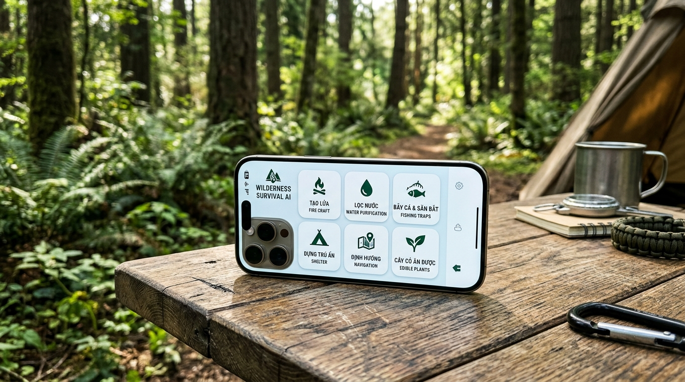
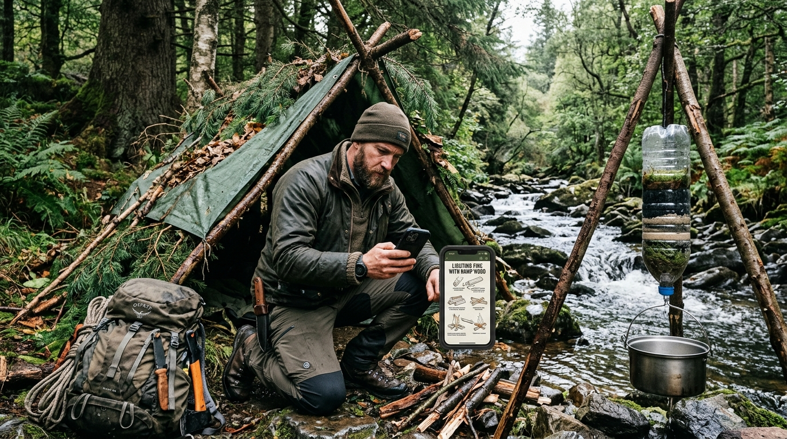
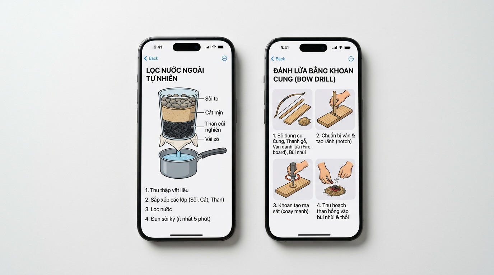
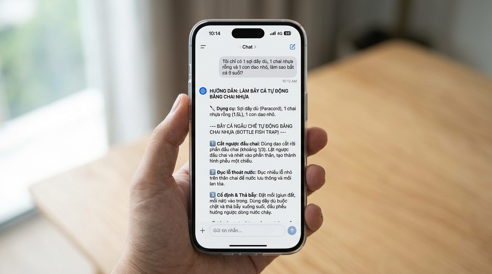

Bách Khoa Toàn Thư Sinh Tồn Thực Chiến & AI Cục Bộ
Khi bạn bước vào rừng sâu, leo núi, vượt sông suối hay đối mặt thiên tai ngắt toàn bộ sóng di động: Ứng dụng mang đến kho tri thức sinh tồn khổng lồ từ tạo lửa, lọc nước, bẫy cá kiếm ăn, dựng trú ẩn đến định hướng và sơ cứu ngẫu chế.

6 Trụ Cột Kỹ Năng Sống Còn Trong Tự Nhiên
Không chỉ dừng lại ở sơ cứu, ứng dụng trang bị đầy đủ bộ cẩm nang sinh tồn theo chuẩn biệt động quân đội và hội sinh tồn quốc tế:
Khoan cung (Bow drill), đá lửa, cạo phoi nhựa thông khô trong rừng mưa, bếp hầm Dakota chống khói.
Chế lọc nước đa tầng bằng chai nhựa + cát + than củi, bẫy ngưng tụ sương, lấy nước từ tre nứa.
Bẫy cá chai nhựa 1 chiều ở suối, bẫy cò sập Figure-4, bài test độc tố phân biệt cây dại ăn được.
Lán chữ A (A-frame), lán dựa vách đá hứng nhiệt (Lean-to), nệm lá khô cách nhiệt chống lạnh 5°C.
Bóng gậy mặt trời, chòm sao Bắc Đẩu, hướng rêu mọc trên thân cây, quy tắc men theo hạ lưu sông suối.
Nẹp cành cây cố định gãy xương, băng ép vải xô cầm máu, bất động chi khi bị rắn độc cắn.

Khi Bạn Kẹt Giữa Đại Ngàn Cùng Một Con Dao
Khi rơi vào tình cảnh bất trắc bên bờ suối lúc trời chuyển tối: Bạn cần biết ngay lập tức làm sao có nước uống mà không bị tiêu chảy, và làm sao có ngọn lửa sưởi ấm trước khi đêm lạnh ập xuống.
Minh Họa Từng Bước: Đọc Là Làm Được Ngay
Trong cơn đói rét và hoảng loạn, không ai đọc nổi những đoạn văn dài triết lý. Ứng dụng vẽ sơ đồ lát cắt rõ ràng từng lớp kỹ thuật để người dùng chỉ việc bắt chước thao tác.


Giải Quyết Bài Toán "Tôi Chỉ Có Những Đồ Này..."
Điểm mạnh vượt trội của Local LLM (Qwen 4B) so với một cuốn sách PDF tĩnh: Người dùng có thể khai báo những thứ lặt vặt họ đang có, và AI sẽ lên kế hoạch lắp ghép thành công cụ sinh tồn!
1. Cắt rời đầu chai 1/3, lật ngược nhét vào thân làm phễu một chiều.
2. Đục các lỗ nhỏ quanh thân chai để nước lưu thông và mùi mồi lan tỏa.
3. Đào giun đất cho vào chai, dùng dây dù buộc cổ bẫy thả ngược dòng suối.
Mô Phỏng Tình Huống Sinh Tồn Ngay Trên Sân Khấu
Bấm chọn một tình huống thực địa dưới đây để xem cách hệ thống trích xuất cẩm nang và gợi ý giải pháp sinh tồn trong tích tắc:
1. Tìm gỗ nhựa thông (Fatwood): Tìm cành thông gãy lâu ngày hoặc phần gốc mục. Lõi gỗ sẫm màu mùi tinh dầu nồng nặc là nơi chứa 100% nhựa cháy.
2. Cạo phoi mịn (Feather sticks): Dùng dao cạo lớp phoi mỏng như lông vũ làm bùi nhùi bắt tia lửa.
3. Nguồn tia lửa ngẫu chế: Nếu không có đá lửa, dùng 2 sợi dây điện nhỏ hoặc giấy bạc kẹo cao su quẹt chập 2 cực pin điện thoại dự phòng để bén lửa vào bùi nhùi.
4. Xếp củi hình tháp (Teepee): Xếp que củi nhỏ từ trong ra ngoài để tạo luồng khí đối lưu hút nhiệt.
Quy Tắc Thử Nghiệm Độc Tố Đa Năng (Universal Edibility Test)
Ăn nhầm nấm kịch độc hoặc lá ngón có thể tử vong trong 30 phút. Ứng dụng cung cấp quy trình kiểm tra độc tính 5 bước chuẩn quân đội kèm danh mục cây ăn được tại Việt Nam.
Bộ Não Đôi: Thông Minh Khi Cần, Bền Bỉ Khi Nguy Cấp
Trong rừng sâu, mỗi 1% pin đều là cơ hội sống sót. Hệ thống sở hữu thuật toán chuyển đổi linh hoạt giữa hai mô hình AI cục bộ theo nhiệt độ và năng lượng máy.
| Dung lượng cài | ~3.06 GB (INT4) |
| Mức RAM đỉnh | ~3.8 GB (ổn định trên 8GB) |
| Tốc độ | 30 – 35 token/s |
| Dung lượng cài | ~1.75 GB (INT4) |
| Mức RAM đỉnh | ~2.1 GB peak |
| Tốc độ | 48 – 55 token/s (nhanh gấp đôi) |
Thị Trường Outdoor, Du Lịch Mạo Hiểm & Dân Phượt Toàn Cầu
Không chỉ là ứng dụng khẩn cấp, đây là người bạn đồng hành không thể thiếu cho hàng chục triệu người yêu thiên nhiên, trekking, cắm trại và sinh tồn hoang dã.
Kế Hoạch Ra Mắt Ứng Dụng Sinh Tồn Toàn Năng
12 tuần từ bản vẽ kỹ thuật đến ứng dụng chính thức trên App Store với sự đồng hành của các chuyên gia sinh tồn và kiểm lâm kỳ cựu.